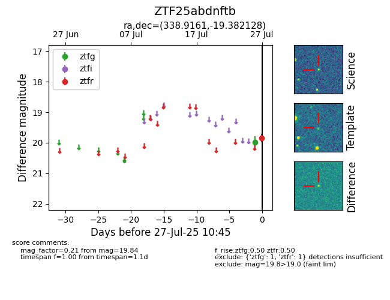

Target ZTF25abdnftb at 2025-07-27 10:45, see:
FINK: fink-portal.org/ZTF25abdnftb
Lasair: lasair-ztf.lsst.ac.uk/objects/ZTF25abdnftb
ALeRCE: alerce.online/object/ZTF25abdnftb
alt names
ZTF25abdnftb (ztf,fink)
coordinates:
equatorial (ra, dec) = (338.9161,-19.38213)
galactic (l, b) = (39.5897,-57.97394)
photometry
last ztfg=19.97, ztfr=19.84
1 ztfg, 1 ztfr detections
